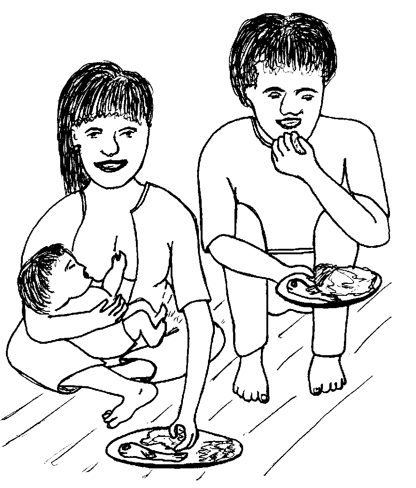
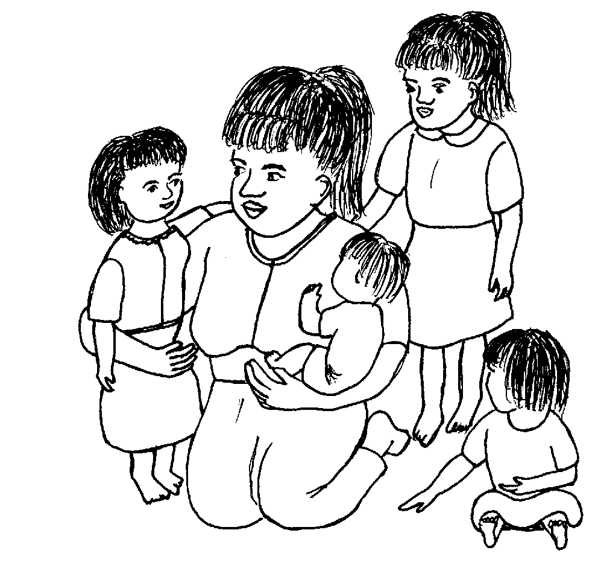
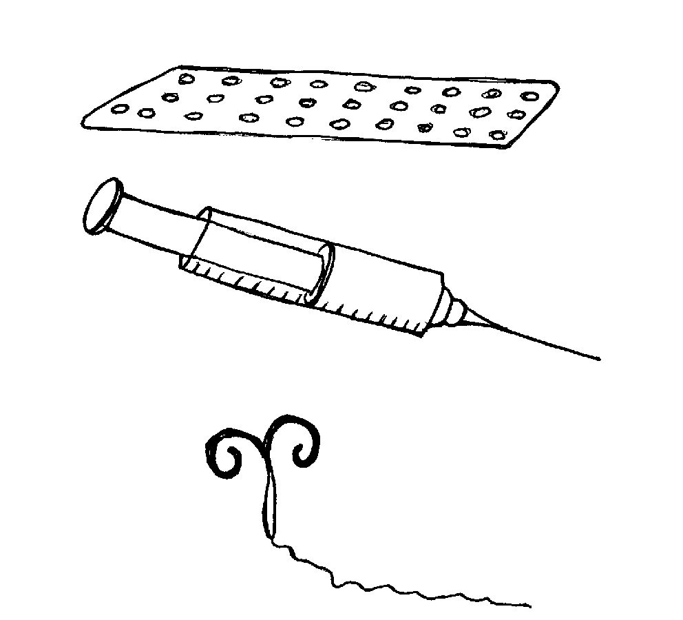
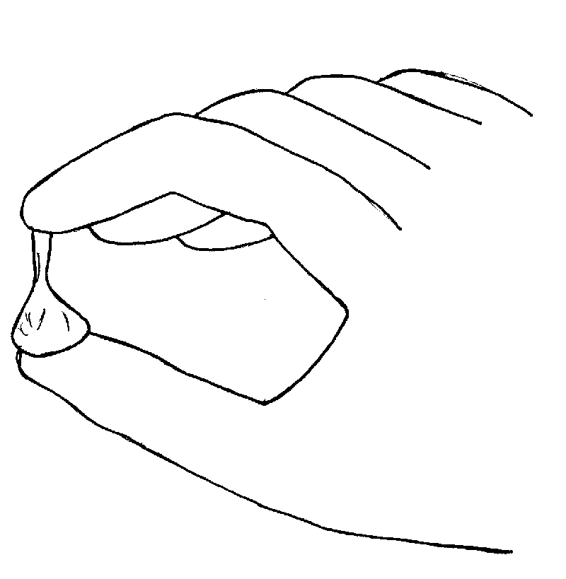
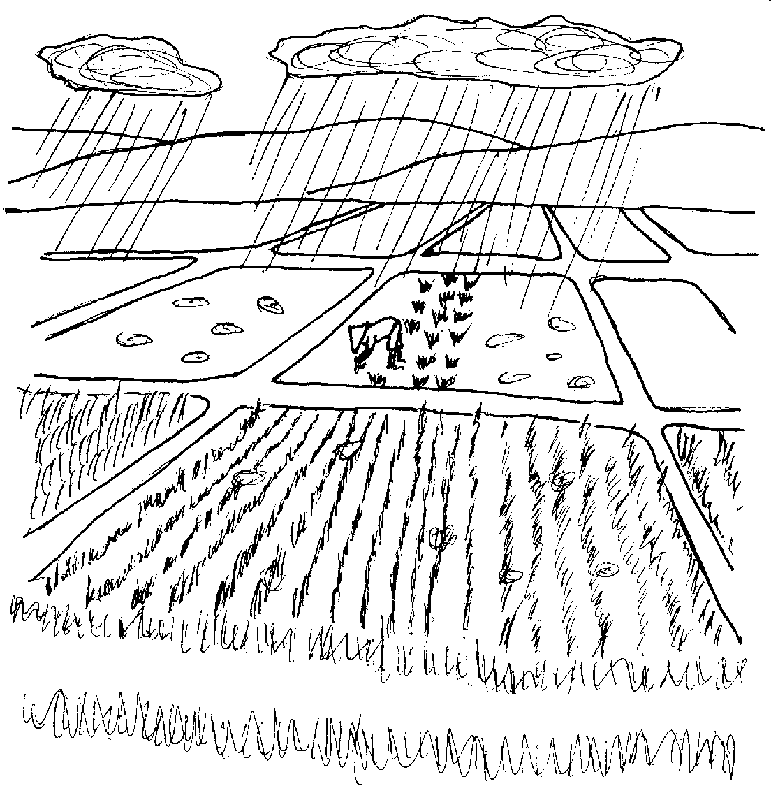
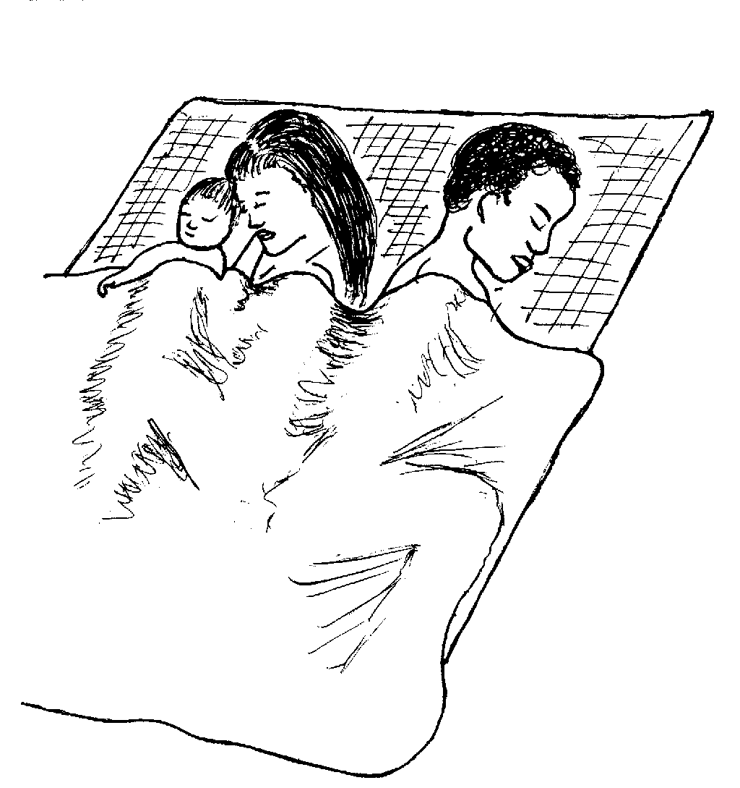
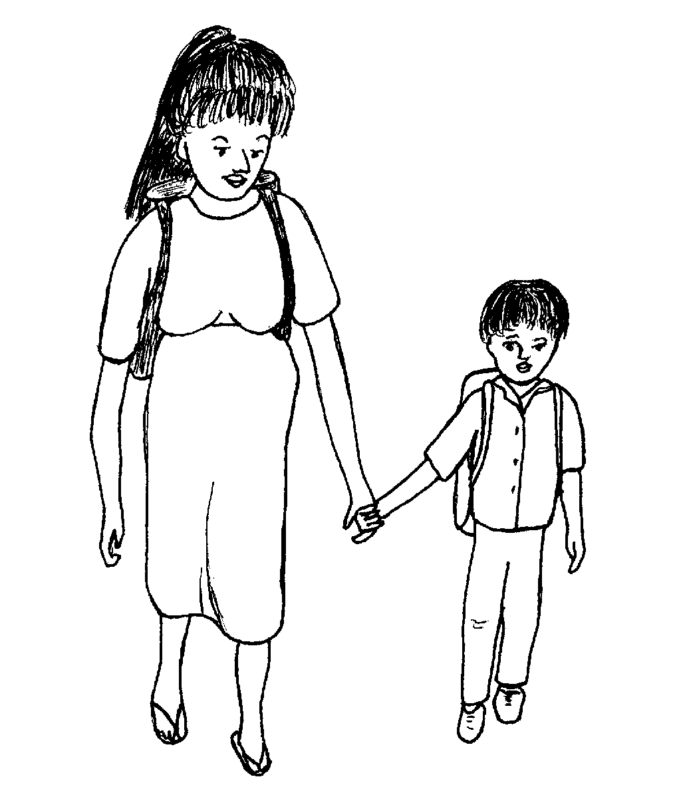

Matigsalug Manobo Healthbooks
Previous Healthbook Up to main Healthbooks page Next Healthbook
Vernacular Lexicon
A
B
BAP
BL
D
E
G
H
I
K
KI
L
LA
LIP
M
N
O
P
PA
R
S
SE
SIN
T
TE
TIN
U
V
W
Y
Z
Healthbooks
Sabekan aldew migpanumbaley si Bibing diye te engki Lolita duma te asawa rin wey me anak dan.
Ne seeye se anak dan, migdaruwe e ne bulan, amanan migmeupiya ka bate.

Migpalalahey sikandan samtang te mig-andam si Lolita te pegkeen ne hemey, gulay, wey isda para kandan.
Migkahi ka asawa ni Bibing diyet engki Lolita wey diyet ki Inuk te, “Miggendini key su egbuyu key te tambag kaniyu.
“Nahale key te me anak ney piru kene key egkeupian neg anak pad man-e.
“Panulua key ke nekey kag gimuwen ney eyew kene key pad egpakaanak man-e.”
Ne migkahi si Inuk te, “Masulug ka paahi ne keneg pakaanak.”
Ne migkahi sikandin te, “Kaayun neg palaygit ka malitan wey ke egpabaysik ka lukes su eyew keneg pakaanak sikandan.
“Piru keg keupian kew pad neg anak keureme, due man-e duman paahi.”
Migkahi si Bibing te, “Egkeupian key pad neg anak keureme piru kene pad kuntee su egpangatimanen ku pad ka hep-at ne anak ney.

“Ne nekey naan pad man-e ka duma ne paahi ne kene kig pakaanak?”
Ne migkahi si Inuk diyet ki Bibing te, “Egkaayun neg inum ka te tablitas wey ke indiksyun naa.

“Wey ke egpaayudi ke naa degma. Piru ka ayudi, sengekakuwa egpakarereet te lawa.”
Ne migpabulus si Inuk ka migkahi te, “Duen pad man-e duma ne paahi ne keneg pakaanak.
“Emun ke egpabulus ka egpasusu te bate, kema ke kene ke pad eglangeseen te me pilan bulan.

“Ne puun due, egkaayun ne kene ke pad egpakaanak.
“Piru due duma ne malitan ne kene de eggingumaan te hen-em ne bulan neg langeseen e.”
Ne migpangguhud si Inuk diyet kandan te, “Emun keg bunsuran kad man-e eglangeseen, keilangan ne tagse bulan egtantanuran nu ka timpu ne due deisek ne atelug diyet keykew su sika ka egkeyimu ne bate emun ke dueg gimuwen niyu te alunggun.
“Te pilan aldew ke egkeimpusan ka kag langeseen, egkanengnengan nu ka panti nu neg kasubid wey dueg lihawang ne egmalamiket iling kaangkag te diyet atelug te me manuk.

“Sika ne timpu, eglepew ka deisek ne atelug ne sika kag kaayun neg keyimu ne bate.”
Ne migkahi si Inuk te, “Egpekeiling sika te similya te paley ne wey re egtubu keg kasubid.
“Ne emun keg pakaheram ka malitan te panti rin neg kasubid, sika ne timpu neg kaayun egkeyimu ne bate emun ke dueg gimuwen niyu te alunggun.”

Ne migpabulus man-e sikandin ka migkahi te, “Keilangan Bibing neg bantayan nu sika ne emun keg kaheram nu neg kasubid ka panti nu, keilangan neg kahiyan nu ka asawa nu te delikaddu ke dueg gimuwen niyu. Wey e egkaayun ke warad e sika seled te daruwa ne aldew.”
Ne migkahi si Inuk te, “Keilangan ne amana kew eg-ayad-ayad taman te igkasapulu ne aldew puun te neimpusan ka kag langeseen.

“Pekeimpus te sika ne timpu, ka atelug egpatey e wey kene kew red egpakaanak.”
Amanan nahale ka alunggun te pegpanulu ni Inuk kandan meyitenged due.
Pigtuman dan ka langun ne impanulu ni Inuk wey nataman, nanengnengan dan e ne malehet langun ka impanulu kandan.
Ne hengkayi se eg-iskuyle e ka anak dan ne lukes, nakaanak e man-e sikandan.

Ne henduen dan pad nakanengneng ke nekey ne timpu neg anak tenged te impanulu e sikandan ni Inuk.
Nekey-a ka duman paahi ne keneg pakaanak?
Nekey kag gimuwen te malitan ne iyam pad mig-anak su eyew mananey pad egpakaanak?
Pekeimpus neg langeseen ka malitan, ken-u naa egkaayun neg kaberes ka malitan ke dueg gimuwen dan te alunggun?
Egmenuwen-a te malitan teg pakanengneng neg ligwang ka atelug din wey egkaberes din ke dueg gimuwen dan te alunggun?
Egkaluhey naa ne keneg kaayun ne dueg gimuwen te alunggun, tagse bulan, ke kene dan egkeupian neg pakaanak? Me pilan aldew?
Egpalaygit ka malitan wey ke egpabaysik ka lukes, eg-inum te tablitas wey ke egpeindikyun, egpaayudi, egtantanuran ka panti te malitan emun ke due egmalamiket. (Lukib 45, 49)
Malasi egpasusu te bate te maaldew wey marusilem. (Lukib 50) Ispurtanti amana ne ka bate, kene diyeg susu te lain, ke kene, diyet iney rin wey kene pad egpakeenen ka bate taman te hep-at e ne bulan.
Te hun-a wey ke igkarangeb ne simana keg pekeimpus kag langeseen, ke due maangkag ne malamiket neg ligwang diyet panti te malitan. Su sika ne timpu, eglihawang ka atelug neg keyimun bate ke due eggimuwen te alunggun. (Lukib 53, 57)
Emun egkasubid ka panti rin, wey due egmalamiket neg ligwang. (Lukib 53, 55)
Emun ke due kag malamiket wey keg kasubid ka panti te malitan, keilangan ne ware eggimuwen te alunggun taman teg kaawe e sika. Su egginguma te sabekan simana wey ke sapulun aldew naa puun te eglangeseen ka malitan. (Lukib 55, 57)
This page last updated: 28-Dec-2019
Copyright © 2009-2010